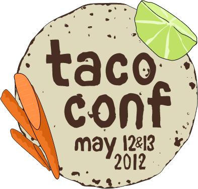

TacoConf is back again in 2013 for round two: September 15th, 2013 starting at 11:45AM. Mexican Independence Day! Meet at Snow park - Downtown near Lake Merritt, Oakland
Here is a video recap of TacoConf 2012: http://www.youtube.com/watch?v=kQICO7uz_2k
TacoConf is a one day free event in Oakland that is designed to expose people to the amazing taco spots around town. Bring your bicycle, bring some friends, bring some cash and spend Mexican Independence Day casually riding around on bikes around downtown and Fruitvale.
Throughout the day we will learn about the history of some taquerias, learn about Mexican food culture and try tacos from trucks, foodie upstarts and family owned taquerias.
Schedule: 11:45AM - meet at Snow Park. Then we bike to tacos! More detailed schedule soon.
What to bring
If you don't have a bicycle there are places like Manifesto Bikes in Oakland that rent daily for around 25 bucks.Dietary Note: there will be vegetarian options available at most locations, but vegan cannot be verified at this time.
Watch our twitters for more details or view the event on Facebook
Tweet